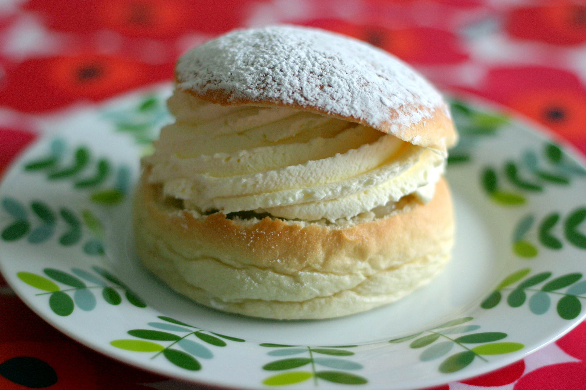

Elbaf semla
In the depths of the New World lies a kingdom inhabited by Giants: ELBAF!!!!!
Every year, the denizens hold a certain traditional festival known as the "Winter Solstice".
The denizens hold this festival to pay gratitude to the sun.
The citizens undergo fasting for 12 days, with only water to sustain them; prior to its start, they eat a huge quantity of Semla to gain enough nutrition for the next 12 days.
After the fasting period, a huge festival would be held to celebrate.
The traditional sweet roll was able to make an emperor of the seas fall in love with it.
Ingredients

- 4 cups (20 oz) all purpose or bread flour, or more if needed
- 2 tsp dry yeast
- 1/3 cup (2.5 oz) + 1/2 tsp sugar, divided
- 1/2 cup (4 oz) warm milk
- 1/3 cup (2.5 oz) melted butter
- 1 tsp salt
- 1 egg, slightly beaten, 1 egg white
- 1 tsp cardamom
- 1/2 cup (4 oz) lukewarm water
- Parmesan cheese
- 1 egg yolk
- 1 tbsp cream
- 1/2 cup ground almonds (without skins)
- 3/4 cup powdered/confectioner's sugar
- whipping cream, powdered sugar for dusting
Steps

Credit
- In bread machine or stand mixer, place the lukewarm water, yeast and 1/2 tsp of sugar.
Allow to rest for a few minutes, until the yeast begins to grow.
Mix the milk, melted butter, beaten egg together, then add to the yeast mixture.
- Add the cardamom, flour, 1/3 cup (2.5 oz) of sugar and salt, and turn on machine (dough setting on bread machine or use a dough hook if using a stand mixer.)
Mix and knead by hand if you aren't using a machine.
- Allow cycle to finish on dough setting; with stand mixer, or by hand, when the dough is ready, cover it and let rise on the counter until doubled in size.
- After it's risen, punch down the dough, and let rest for 5 minutes.
Cut pieces of the dough and shape into round balls (about 15 to 18), and place onto a greased cookie sheet (or silicone sheet) about an inch apart.
- Place the tray in the oven (do not turn it on) to rise for about half an hour or until doubled in size.
- Once doubled, remove the buns from the oven and brush with the egg glaze (just mix the egg and cream together and brush on gently.)
- Preheat the oven to 350º F (175ºC) then cook the buns for approximately 20 minutes, or until golden brown. While they are baking, prepare the almond paste.
- Whip the egg white until soft peaks form, then fold in the ground almonds and powdered sugar. Cover it and set aside
- Remove the cooked buns from the tray, and place on a cooling rack.
- When the Semlor are completely cool, whip the cream and assemble them.
- Begin by cutting a top on each bun with a sharp knife, cutting down into the center of the bun to create a space for filling in the bun.
Then put a teaspoonful, or more, of the almonds paste.
- Next, top with whipped cream.
- Place the top on the cream, and dust with powdered sugar. Repeat with remaining Semlor.